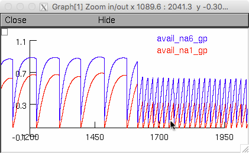
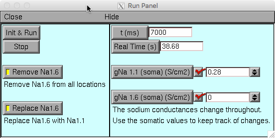
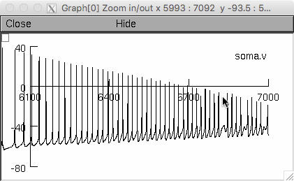

NEURON mod files from the paper: Mercer JN, Chan CS, Tkatch T, Held J, Surmeier DJ. Nav1.6 sodium channels are critical to pacemaking and fast spiking in globus pallidus neurons.,J Neurosci. 2007 Dec 5;27(49):13552-66. This is the model demonstrated in Figures 9.B-C & 10.A-B: Figure 9. Two Na+ channel model of wild-type and Nav1.6 null neurons. B, Voltage records from a representative GPe neuron were used as voltage commands to estimate the availability (as sum of channels in the O and C1-5 states) of model Na+ channels. Action potentials were truncated for clarity. C, Steady-state availability of modNav1.1 (red) and modNav1.6 (blue) channels during basal autonomous firing at 12 Hz (left), as well as that during driven activity (with intracellular current pulses) at 50 Hz. Figure 10. Simulations suggest that Nav1.6 channels are critical to fast spiking but not pacemaking. A, Autonomous activity in a model of a GPe neuron. Top trace, Spiking of the model wild-type neuron at 12 Hz when the complete complement of Na+ channels is present. Middle trace, Spiking of the model neuron is reduced to 5 Hz when model Nav1.6 channels are simply deleted from the model. Bottom trace, Spiking of the model neuron is restored to near that of the wild-type model when Na+ channel density is maintained by replacing model Nav1.6 channels with model Nav1.1 channels. B, The response of the same three models to a current ramp delivered to the soma. In the wild-type model, the maximum discharge rate was near 100 Hz. In contrast, the model in which Nav1.6 channels were deleted failed to fire at a high frequency (middle); maintaining Na+ channel density by replacing Nav1.6 channels improved the performance of the model, but the peak discharge rate was still well below that of the wild-type model with modNav1.6 channels (bottom). Sample model usage: (Note, you will have re-launch the model between running Figure 9 & 10, and vice versa.) Run examples: Compile the mod files before starting with mosinit.hoc. For more info on starting the model please consult this quide: https://senselab.med.yale.edu/ModelDB/NEURON_DwnldGuide.cshtml Figure 9 - The run includes a period of autonomous firing at about 12 Hz followed by a period of driven activity at about 50 Hz.  Figure 10 - The run includes a current injection ramp of 1 nA over the last 1 second. The data in the figure are based on the steady state condition before the ramp.   To delete the Nav1.6 channels, use the "Remove Na1.6" button. To replace Nav1.6 channels with Nav1.1 channels, use the "Replace Na1.6" button. Questions on how to use this model can be directed to Josh Held, j-held@northwestern.edu